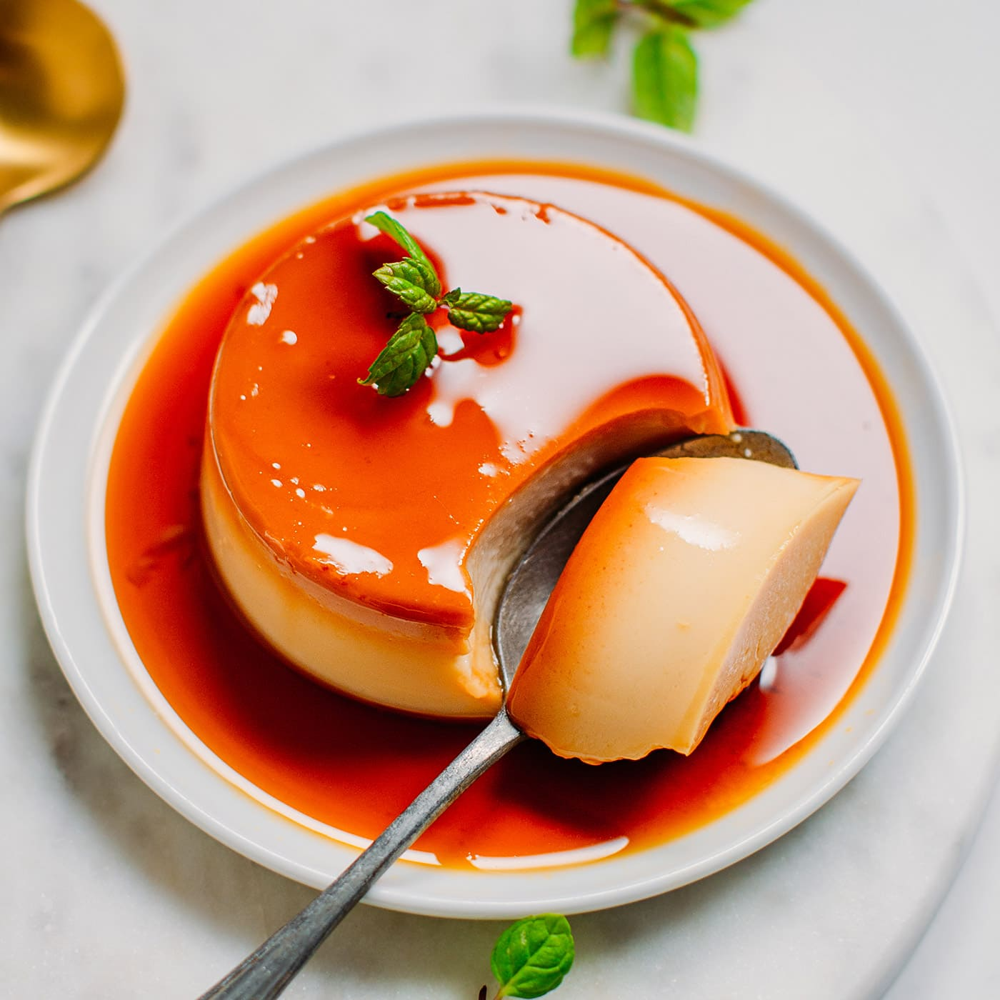

Flan Recipe

Crème caramel is a variant of plain custard (crème) where sugar syrup cooked to
caramel stage is poured into the mold before adding the custard base. It is usually
cooked in a bain-marie on a stovetop or in the oven in a water bath. It is turned and
served with the caramel sauce on top, hence the alternate French names crème (caramel)
renversée or crème renversée au caramel. The milk may be flavored with vanilla, cinnamon, or lemon peel.
Ingredients
Flan:
- 1 cup white sugar
- 3 eggs
- 1 (14 ounce) can sweetened condensed milk
- 1 (12 fluid ounce) can evaporated milk
- 1 tablespoon vanilla extract
Caramel Topping:
- 1 cup packed brown sugar
- ½ cup unsalted butter
- ¼ cup milk
- 1 teaspoon vanilla extract
Steps
Flan:
- Preheat oven to 350 degrees F (175 degrees C)
- In a medium saucepan over medium-low heat, melt sugar until liquefied and golden in color.
- Carefully pour hot syrup into a 9 inch round glass baking dish.
- In a large bowl, beat eggs. Beat in condensed milk, evaporated milk and vanilla until smooth.
- Pour egg mixture into baking dish. Cover with aluminum foil.
- Bake in preheated oven 60 minutes. Let cool completely.
- To serve, carefully invert on serving plate with edges when completely cool.
Caramel Topping:
- Combine brown sugar, butter, and milk in a saucepan over medium heat. Bring to a boil. Cook until thickened, 1 to 2 minutes.
- Remove from the heat and stir in vanilla extract.